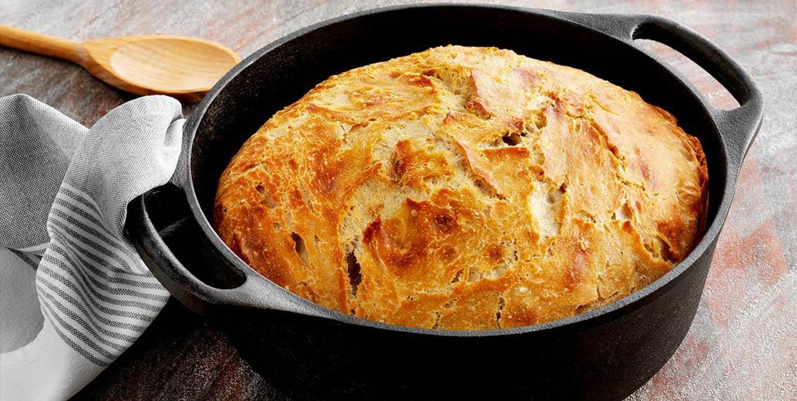

My essential cooking knowledge for surviving J-Land
My name is Niklas and I've chosen a bread recipe as my first theme in our homepage presentation project. Why bread one might ask, because I've lived for two years in Japan on rice, with no access to a good quality bread. Hence I eat it with a tad bit more regards these days :)

Instructions how to bake the bread
Add the water with sourdough and stir until the sourdough dissolves. Add salt and wheat flour. Mix the dough with your hands or a spoon/ladle, about 20 seconds. It is enough that all the flour has been soaked. The dough does not need to be kneaded. Cover the bowl with a baking cloth.
Let the dough stand at room temperature for about 12 hours.
Pour the dough onto a heavily floured baking sheet (the dough is very loose). Fold the dough like a pillow and try to build tension in the dough in this way.
Then let the dough rest for 2 hours in an oiled and slightly floured larger form. Cover with plastic!
Heat your owen to 250 degrees
Put the pot in the oven so that it is hot when the dough has finished resting! Sprinkle some flour in the pot. Carefully scrape the dough out of the pan, into the hot pot. Put the lid on and place it in the lower part of the oven.
After 30 minutes, remove the lid and bake for another 20 minutes.
Total baking time approx. 50 minutes. Turn the bread onto a wire rack to cool. Wrap it in a baking cloth and leave to cool.